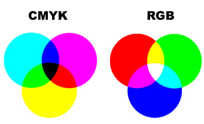

RGB staat voor red, green and blue. Computerschermen bestaan uit rode, groene en blauwe lampjes. Met die drie kleuren kan je dan alle andere kleuren maken. Elke kleur heeft een code, waar een waarde van rode, groene en blauwe pigmenten wordt aangegeven. De waarden liggen tussen de 0 en 255. De kleur rood is bijvoorbeeld RGB(255,0,0) de kleur zwart is RGB(0,0,0) en wit is RGB(255,255,255)
CMYK staat voor cyaan, magenta, yellow en key(zwart)
